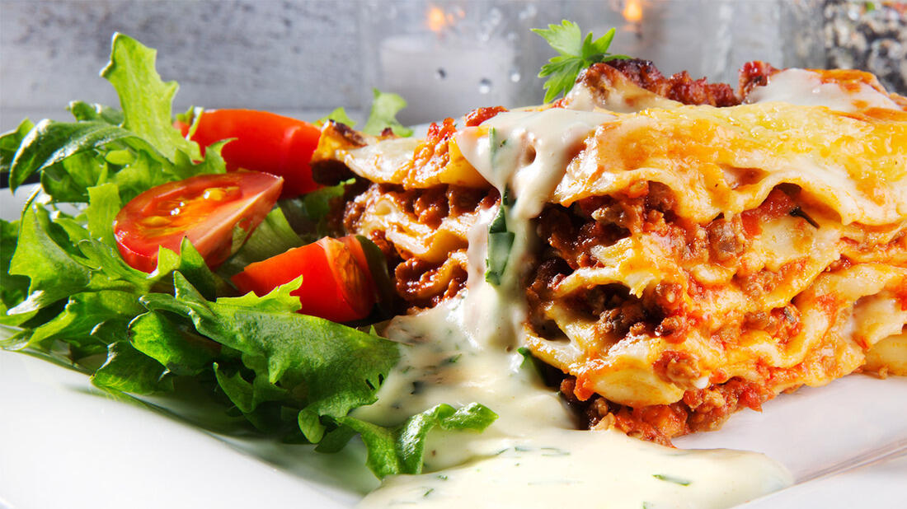

Lasagne

Lag på lag med velsmak gjør lasagne til en populær rett. Elsket av voksne og barn - og alltid en vinner på middagsbordet.
Ingredienser
- 400g kjøttdeig
- 1 stk løk
- 2-3 fedd hvitløk
- 400g hermetiske tomater
- 1 stilk stangselleri
- 1 ss tomatpure
- 1 ts oregano
- 12 stk lasagneplater
- ostesaus
Fremgangsmåte
- Varm olje i stekepannen, ha i finhakket løk, presset hvitløk og kjøttdeigen. Rør rundt til kjøttdeigen er grynete og lett stekt. Tilsett tørket oregano, hakket stangselleri og tomatpuré. Rør dette godt inn i sausen, før vann og hermetiske tomater has i. La sausen småkoke i minst 15 minutter, før den smakes til med salt og pepper.
- Smelt smør i en kjele og rør inn hvetemel til en klumpefri masse. Spe inn varm melk litt etter litt, til du har en passe tykk saus.
- Krydre sausen med revet muskat, salt og pepper. La sausen småkoke i 8-10 minutter, rør jevnlig, så den ikke brenner seg i bunnen av kjelen. Tilsett revet ost og rør til osten har smeltet inn i sausen.
- Smør bunnen og kantene av en ildfastform som passer til lasagneplatene. Dekk bunnen av formen med et tynt lag ostesaus. Legg over et lag lasagneplater. Dekk disse med kjøttsausen og legg et nytt lag med plater. Legg vekselvise lag med kjøttsaus og ostesaus til du har minst fire lag. Spar litt av ostesausen, tilsett hakket basilikum og serverer sausen som tilbehør.
- Topp lasagneformen med ostesaus og litt av kjøttsausen. Strø over revet Jarlsbergost. Stek lasagne formen i ovnen på 200 grader i ca. 30-40 minutter, til ostesausen på toppen har fått en gyllen farge. Serveres med frisk salat og ostesaus.